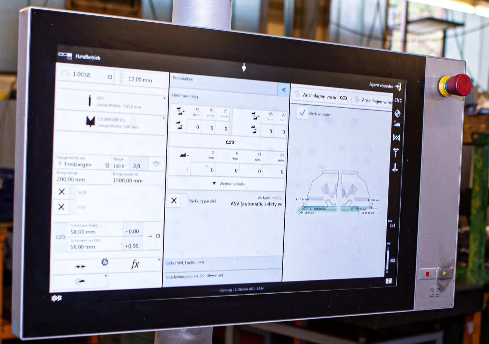

Kantprogramme im Haus
Wir erstellen die Programme selbst und legen sie ab. Nachbestellungen laufen dadurch ohne neue Einrichtzeit.
Aus der flachen Tafel wird das Teil mit Kante. An der TruBend 5040 kanten wir Bleche bis 3000 Millimeter Länge und 20 Millimeter Dicke.
Die Abkantpresse steht wenige Meter neben dem Laser. Was morgens geschnitten wird, kann mittags schon gekantet sein — ohne Transport, ohne zweiten Betrieb, ohne Wartezeit zwischen zwei Terminen.

Das Werkzeug fährt herunter, das Blech legt sich in die Matrize. Aus der Fläche wird in diesem Moment ein Körper.
Winkel

Laser und Abkantpresse stehen in derselben Halle. Die geschnittene Tafel geht ohne Umweg an die Presse.
Wir erstellen die Programme selbst und legen sie ab. Nachbestellungen laufen dadurch ohne neue Einrichtzeit.
Bis drei Meter am Stück — Abkantungen für Rahmen, Verkleidungen und Aufbauten.
Bis 20 Millimeter. Auch dort, wo es auf den Innenradius ankommt.
U-Profile, Z-Kanten, Versätze — mehrere Biegungen an einem Teil, in einer Aufspannung gedacht.
Das erste Teil wird gemessen, bevor die Serie durchläuft. Winkel und Schenkellänge werden protokolliert.
Weil wir auch schneiden, rechnen wir die Biegezugabe schon im Zuschnitt mit.


Was Einkäufer und Konstrukteure uns zu Abkanten am häufigsten fragen — beantwortet von den Leuten, die die Maschine fahren.
Ihre Frage steht nicht dabei?
Anrufen: 08772 803707Bis 3000 Millimeter. Das entspricht genau unserem Tafelformat beim Laser — Schneiden und Kanten passen also zusammen.
Ja. Wenn wir das Teil auch schneiden, ist die Abwicklung schon im Zuschnitt berücksichtigt. Sie bekommen das Maß, das Sie bestellt haben.
Ja. Bei Nachbestellungen fällt die Einrichtzeit weg und das Teil ist schneller wieder auf der Palette.
Ja. Bringen Sie die Zuschnitte mit — wir brauchen dann die Abwicklung und den gewünschten Innenradius.
Bis 3000 Millimeter bei 20 Millimeter Blechdicke. Mit der Zeichnung rechnen wir die Abwicklung gleich mit.
Oder direkt anrufen: 08772 803707